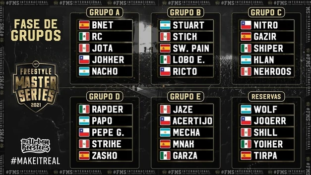
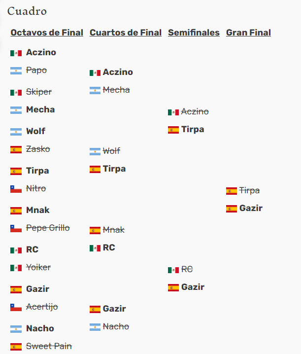

La FMS Internacional 2021 es la segunda edición internacional de la historia de la liga profesional de freestyle llamada FMS, esta competencia creada por Urban Roosters, busca reunir a los mejores freestylers de cada liga de FMS, para competir entre si.
Participantes
FMS Argentina- Papo
- Mecha
- Klan
- Nacho
- Wolf (Reserva)
- Nitro
- Acertijo
- Pepe Grillo
- Jokker
- Joqerr (Reserva)
- Gazir
- Sweetpain
- Mnak
- Zasko
- Tirpa (Reserva)
- Rapder
- RC
- Skiper
- Garza
- Yoiker (Reserva)
- Azcino (Ganador año anterior)
- Jaze
- Stick
- Jota
- Nekroos
- Skill (Reserva)
Formato de las Batallas
Fase de Grupos
Las batallas de fase de grupos serán de formato corto: Ronda Incremental y 8x8 de 120 segundos.
Octavos de final
Round 1: Easy Mode - Palabras cada 10 segundos - 60 segundos por MC. Round 2: Sangre - 60 segundos por MC - Ida y Vuelta. Réplica: 4x4 - 120 segundos
Cuartos de final
Round 1: Temáticas - 40 segundos por MC - Ida y Vuelta. Round 2: Imágenes - 160 segundos - 8x8 - 2 imágenes. Round 3: Deluxe - 3 entradas a capella por MC + 160 segundos 4x4 Réplica: 4x4 - 120 segundos.
Semifinales
Round 1: Random Mode - 160 segundos - 8x8. Round 2: Sangre - 60 segundos por MC - Ida y Vuelta. Round 3: Deluxe - 3 entradas a capella por MC + 160 segundos 4x4. Réplica: 4x4 - 120 segundos.
Final
Round 1: Easy Mode - 60 segundos por MC - palabras cada 10 segundos + Hard Mode - 60 segundos por MC - Palabras cada 5 segundos. Round 2: Temáticas - 40 segundos por MC con temáticas - Ida y Vuelta. Round 3: Objetos - 160 segundos - 8x8 - Objetos random. Round 4: Sangre - 60 segundos por MC - Ida y Vuelta. Round 5: Deluxe - 3 entradas a capella por MC + 160 segundos 4x4. Réplica: 4x4 - 120 segundos
